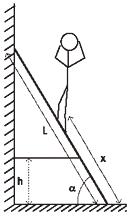
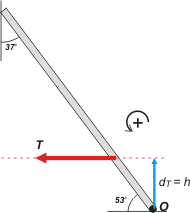
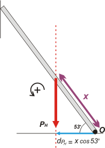
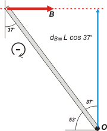

NO ME SALEN
(EJERCICIOS RESUELTOS Y APUNTES TEÓRICOS DE FÍSICA)
Estática
|
|

|
| |
 |
2.19 - Una escalera de peso PE y longitud L, está
apoyada en la pared y sostenida por una cuerda
como indica la figura. La cuerda soporta a lo
sumo un esfuerzo máximo de 60 kgf.
Calcular hasta que posición x de la escalera
puede subir un hombre
de peso PH, sin que
se rompa la cuerda. No
existe rozamiento entre
la escalera y el piso
ni entre la escalera y la
pared.
Datos:
PH = 60 kgf
PE = 20 kgf
α = 53º
L = 3 m
h = 0,7 m |
 |
|
Este problema debería ser el terror de los albañiles, sin embargo, es el de los estudiantes. Lo primero que me interesa es que entiendas la situación del pobre albañil. (En el dibujo parece que se estuviera estirando el cuello, pero no, es que se agarra la cabeza por el problema). ¿Está claro para vos que cuanto más sube, mayor es la fuerza que hace la soga horizontal que ata la escalera a la pared? Miralo, pensalo, asimilalo... no es importante para resolver el problema, si no entendés eso te va a salir igual... pero creo que es importante que eduques tu intuición mecánica.
Basta de disquisisiones filosóficas, vamos al problema. ¿Por donde se empieza? ¡Claro! Por un DCL. |
|
|
 |
Buenos, acá está. Fijate bien todas las fuerzas que puse a ver si falta o si sobra alguna.
La fuerza que hace el hombre sobre la escalera es igual a su propio peso, la llamé, PH y está colocada a una distancia x de la base de la escalera. El peso de la escalera, PE , en el centro geométrico de la escalera. La fuerza que hace la soga, T, horizontal y a una altura h. Tanto la pared como el piso hacen sólo fuerzas perpendiculares a la superficie (normales, para que te quedes tranquilo), las llamé A y B, respectivamente.
Ya consigné la convención de signos para momentos y SR. |
|
|
|
Listo el DCL. Vamos entonces a las ecuaciones. Primero las de desplazamiento.
ΣFx = 0 → B — T = 0 [1]
ΣFy= 0 → A — PH — P E= 0 [2]
Hasta acá no hubo inconvenientes. Recién aparecen ahora cuando hay que plantear la sumatoria de momentos. Y la dificultad estriba solamente en que cuesta un poco determinar las distancias entre el centro de giros y la fuerza en cuestión. Te voy a analizar una por una y recién después planteo la ecuación, ¿ok?
Como voy a tomar centro de momentos en O, el momento de la fuerza A es cero, esta fue fácil. OMA = 0 |
|
|
|  |
Ahora vamos la momento de T. En línea punteada roja tracé la recta de acción de esa fuerza, y con una flecha azul la distancia (perpendicular a la recta) que pasa por el punto O. Esa distancia es, claramente, h, uno de los datos del problema.
Respecto del punto O la fuerza T haría girar la escalera en sentido antihorario. Según nuestra convención se trata de un momento positivo. dT = h. Luego:
OMT= T . h
|
|  |
Le toca el turno a la fuerza que hace el albañil mientras sube. Este momento crece con x, eso es evidente. Ahí tenés la línea punteada en rojo, la distancia perpendicular... y si te fijás en el triángulo rectángulo que se forma con esas rectas, la distancia que nos interesa es dPH = x cos 53º. El giro que le produciría a la escalera vuelve a ser antihorario, o sea, positivo. Luego
OMPH = PH . x cos 53º
|
 |
Ahora viene el propio peso de la escalera. De vuelta tenés todos los elementos a la vista, y nada más. Fijate cómo saco todo el resto de los elementos para que no te pierdas. Pensá que en algún momento vas a tener que hacerlo sin ayuda. Si medimos la distancia desde el punto de apoyo hasta el punto de aplicación es media escalera, o sea ½L, pero la distancia hay que medirla en forma perpendicular a la fuerza. Entonces dPE = ½L cos 53º. Luego
OMPE = PE . ½L cos 53º
|
|  |
Por último, le llegó el turno al apoyo en la pared. Entre la recta de acción de B y el punto O, en la perpendicular esta la flechita azul que representa la distancia que nos interesa. Si observás cuidadosamente el triángulo formado por esas rectas y la escalera, verás que dB = L cos 37 º, y que B es la única de todas las fuerzas que haría girar la escalera en sentido horario, por lo tanto
OMB = — B . L cos 37 º
|
|
|
|
Ahora sí, ya podemos plantear la segunda condición de equilibrio, la que dice que la escalera no rota
ΣOM = 0 → OMA + OMT + OMPH + OMPE — OMB = 0
0 + T . h + PH . x cos 53º + PE . ½L cos 53º — B . L cos 37 º = 0 [3]
Tenés que ver dos cosas. La primera en la ecuación de momentos: si crece x también crece B, es la única forma de que la ecuación de cero. Pero la ecuación [1] nos dice que B es igual a T, de modo que si crece w también debe crecer T. Este es exactamente el problema del albañil. Bien supongamos que T ya está haciendo su máxima fuerza posible antes de romperse y entonces calculemos el x máximo al que puede ascender el buen hombre.
de [1]
B = T
reemplazo esto en [3]
T . h + PH . x . cos 53º+ PE . ½ . L . cos 53º — T . L . cos 37 º = 0
despejo x
x = ( T . L cos 37 º — PE . ½ . L . cos 53º — T . h) / PH . cos 53º
|
|
|
| |
x = 2,3 m |
bastante arriba puede llegar |
|
|
|
| Nunca permitas que un albañil trepe por una escalera en tu casa si no te muestra su seguro SRT y hacés previamente algunos cálculos. |
|
|
| |
| |
| DISCUSION: la discusión más importante la dimos más arriba cuando analizamos que la distancia máxima que podía ascender el hobre se correspondía con la tensión másxima que podía soportar la soga. Esta situaciones límite son architípicas en los planteos de física. A veces no es fácil entenderlos parándose en esa situación... bueno, podes correrte apenas un poquitito y ya se observa con más tranquilidad. |
|
 |
| DESAFIO: Resolver exactamente el mismo problema tomando centro de momentos en el punto de apoyo de la escalera en la pared. |
|
| Algunos derechos reservados.
Se permite su reproducción asexual citando la fuente. Última actualización set-06. Buenos Aires, Argentina. |
|
|
|